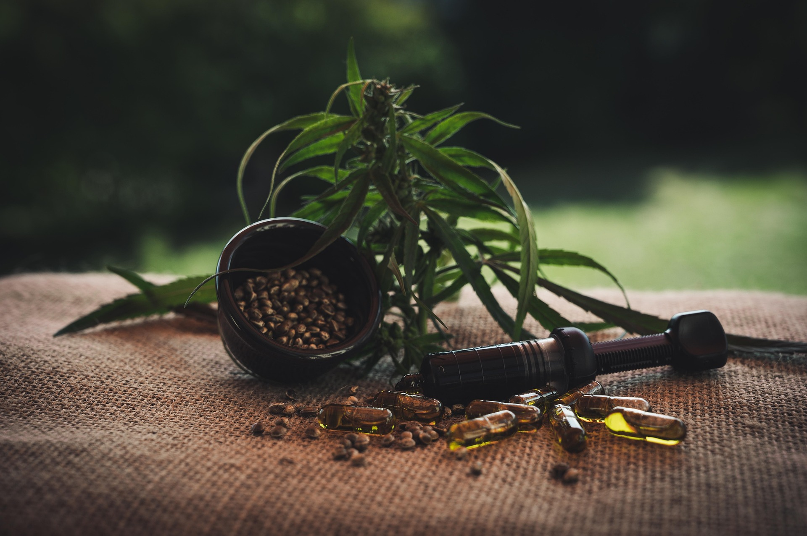

Présentation
Les cosmétiques naturels marocains sont reconnus dans le monde entier pour leur efficacité et leur authenticité. Extraits des richesses naturelles du Maroc, ils sont utilisés depuis des siècles pour prendre soin de la peau et des cheveux, selon des recettes ancestrales transmises de mère en fille.
Nos Produits Naturels

Huile d'Argan
100% pure et naturelle, l'huile d'argan est extraite à la main dans la région de Souss. Surnommée "or liquide du Maroc", elle nourrit et protège la peau et les cheveux en profondeur.
Découvrir l'huile d'argan →
Savon Beldi
Savon traditionnel au karité, idéal pour le rituel du hammam marocain. Le savon beldi purifie et adoucit la peau en profondeur grâce à ses ingrédients 100% naturels.
Découvrir le savon beldi →
Eau de Rose
Distillée à partir des roses de la vallée du Dadès, cette eau de rose hydratante et purifiante est un trésor de la cosmétique marocaine, utilisée comme tonique naturel au quotidien.
Découvrir l'eau de rose →Catégories liées
Explorez également nos autres catégories d'artisanat marocain :